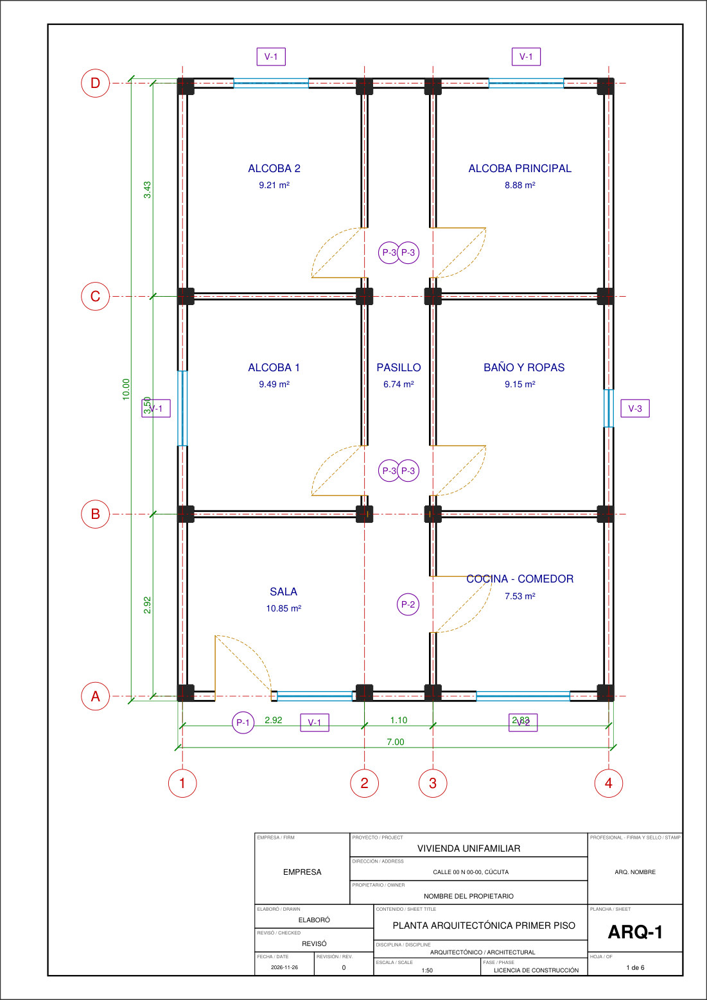
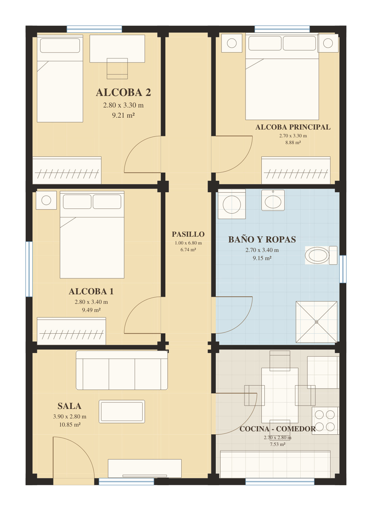
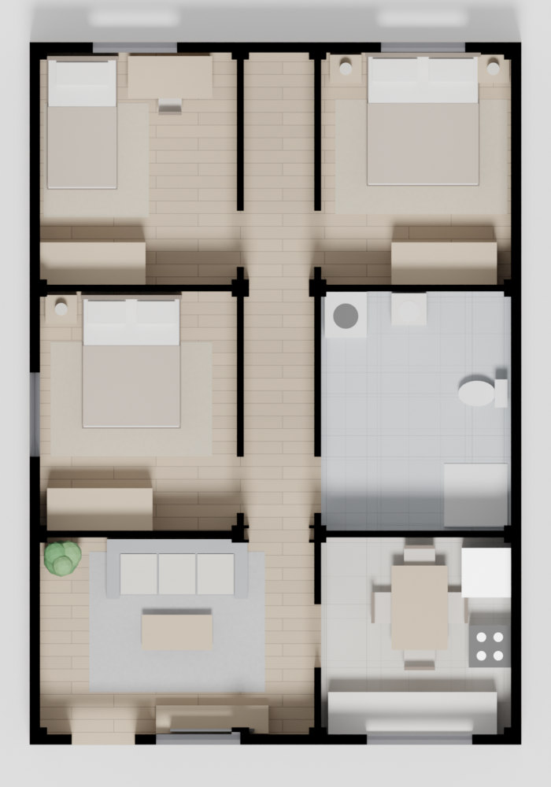
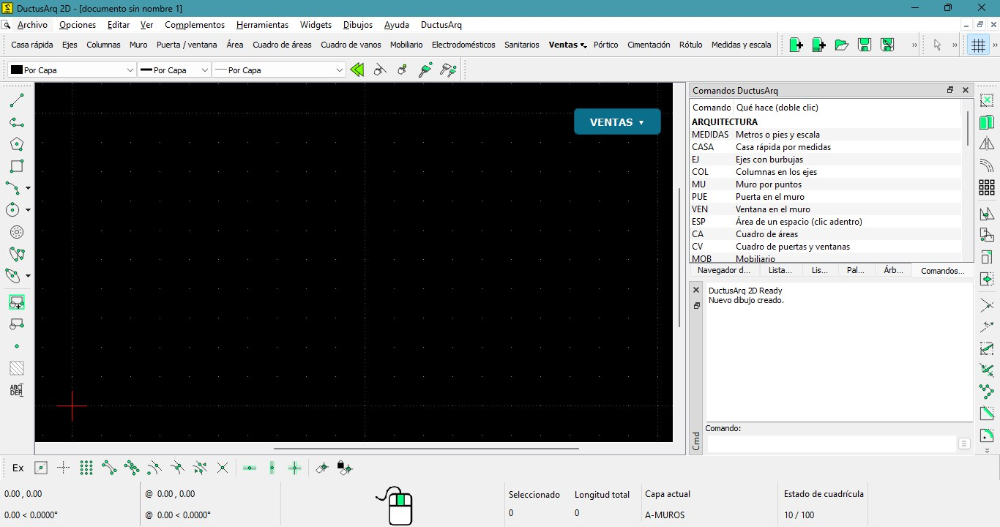
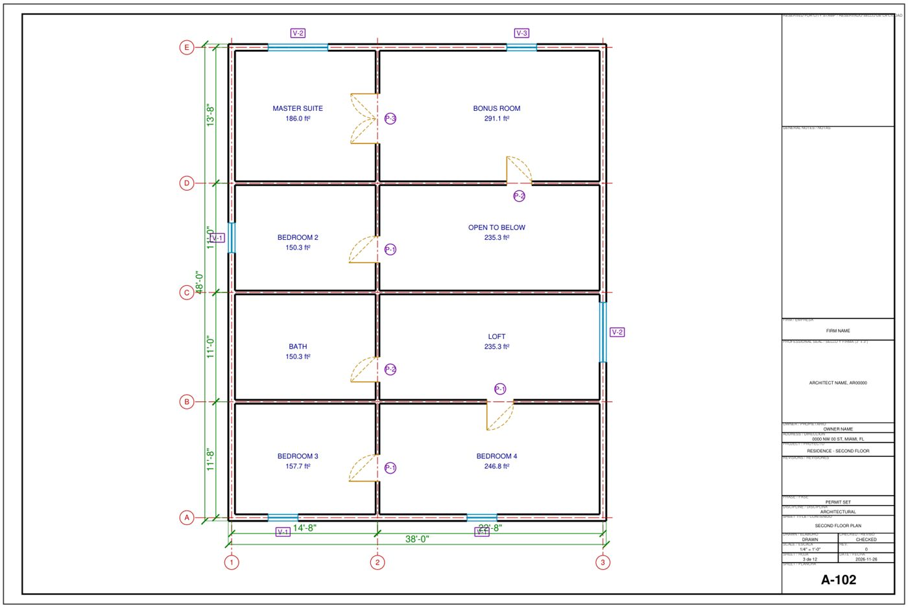

Del plano a la publicidad
El mismo dibujo sirve para todo: el plano 2D con medidas para la curaduría o el permiso, y para el equipo de ventas y mercadeo el plano de ventas a color, las fotos del render y el video para redes.



Qué hace
Cada herramienta está en la barra «Arquitectura», en el menú DuctusArq y como comando corto que se escribe en la línea de comandos. La lista de comandos queda siempre a la vista (doble clic la ejecuta) y el botón VENTAS, encima del dibujo, abre el plano de ventas y el render.

Arrancar el plano
- Medidas y escala MEDIDAS: metros para Colombia y Latinoamérica, o pies y pulgadas para Estados Unidos. Escalas 1:50, 1:100, 1/4" = 1'-0" y más.
- Capas ordenadas: ejes, muros, columnas, puertas, ventanas, cotas, muebles, sanitarios, cimentación y rótulo, cada cosa en su capa.
Estructura y muros
- Casa rápida CASA: escribe 6 x 15 y dibuja la planta con muros, divisiones, pasillo, ejes, columnas, cotas y título.
- Ejes EJ: rejilla con burbujas, letras y números.
- Columnas COL: en los cruces de los ejes.
- Muro MU: por puntos, con espesor y uniones limpias en L, T y cruz.
Puertas, ventanas y áreas
- Puerta / ventana PUE VEN: clic en el muro; abre el hueco, dibuja la hoja y la marca P-1, V-1.
- Área de un espacio ESP: clic adentro y escribe el nombre y los m² o ft².
- Cuadro de áreas CA: áreas, total e índices, con avisos de norma.
- Cuadro de puertas y ventanas CV: tipos, medidas y cantidades; en Miami, columna NOA.
- Revisar circulación CIR: avisa si a un cuarto solo se llega atravesando otro, si falta la puerta de entrada o si el pasillo queda angosto (0,90 m / 36").
Fachadas, cortes y pisos
- Fachadas FAC: las 4 fachadas salen solas de la planta, con puertas, ventanas, losa y niveles.
- Corte COR: marcas la línea en la planta y dibuja el corte con muros y losas cortados, antepechos y dinteles.
- Escalera ESC: calcula los escalones con la norma (NSR-10 o IRC) y la dibuja con la flecha SUBE.
- Piso siguiente PISO: arranca el segundo piso con los muros de fachada, las columnas y el hueco de la escalera.
Amoblar
- Mobiliario MOB: camas, closets, sofás, comedores, escritorios.
- Electrodomésticos ELEC: nevera, estufa, lavadora, secadora, aire, TV.
- Sanitarios SAN: sanitario, lavamanos, ducha, tina, lavadero.
Para ventas y mercadeo
- Plano de ventas a color PV: muros llenos, pisos de color según el espacio, nombre y medidas de cada uno, con el logo y el nombre del proyecto. Sale en PDF para folleto y en tamaños para Instagram e historias.
- Render 3D REN: dos fotos de la planta amoblada, desde arriba y en perspectiva, con pisos de madera, cerámica, tapetes y plantas. Usa Blender, que se instala aparte.
Ingeniería y presentación
- Pórtico POR: columnas, vigas y zapatas en alzado.
- Cimentación CIM: zapatas y vigas de amarre en planta.
- Rótulo o cajetín ROT: hojas A4 a A0, Carta, Tabloide y ARCH; 18 especialidades (arquitectónico, estructural, eléctrico, hidrosanitario, telecomunicaciones…).
- Superponer planos SUP: trae el estructural, eléctrico o hidrosanitario (DWG o DXF) encima del arquitectónico, cada uno en su capa y su color, sin mezclar líneas; se prende y se apaga, y se cuadra por una esquina común.
- Revisar cruces CRU: marca en rojo las columnas del estructural que caen en una puerta o ventana o que quedan sueltas dentro de un espacio.
- Revisar normas NOR: Colombia y Bogotá (NSR-10, NTC, Decreto 555), Florida y Miami-Dade (FBC, IRC, NOA): puertas, pasillos, ventanas en alcobas, áreas mínimas, ventana de escape; con modo 3.ª edad y silla de ruedas.
- Cantidades de obra CANT: muros, columnas, pisos por material, cielo raso, pintura, zócalo, puertas y ventanas, en el plano y en Excel.
- Plantilla de oficina PLANT: capas, medidas y rótulo iguales en todos los computadores del equipo.
- Tutoriales en el menú Ayuda y lista de comandos con aspecto de consola, como al programar.
Colombia y Miami
El programa cambia unidades, escalas, rótulo y cuadros según dónde se radica el plano.
Colombia · metros
- Escalas 1:50 y 1:100, cotas en metros.
- Cajetín abajo a la derecha, con datos para la curaduría.
- Cuadro de áreas con aviso de la Ley 1796 (más de 2000 m²).
Miami · pies y pulgadas
- Medidas como 12'-6", escala 1/4" = 1'-0".
- Rótulo en franja vertical con espacio para el sello de la ciudad.
- Cuadro de ventanas con columna NOA y aviso de ocupación de Miami 21.

Tutoriales
Guías de 8 páginas, paso a paso, con una casa de ejemplo de principio a fin: medidas, casa, puertas, áreas, cuadros, rótulo, amoblar, render, imprimir y la lista para radicar.
Cómo instalar
- Descarga el instalador con el botón de arriba y ábrelo. Pone solo la versión de 32 o de 64 bits según tu Windows.
- Abre DuctusArq 2D desde el escritorio y elige metros o pies en Medidas y escala.
- Escribe CASA en la línea de comandos y sigue el tutorial de tu país.
- Para el render, instala Blender una sola vez; DuctusArq lo encuentra solo.
Versión de prueba. Revisa siempre el plano con la norma vigente de tu municipio o ciudad antes de radicarlo. ¿Encontraste un error o tienes una idea? Escríbenos a ingemaqsewing@gmail.com.